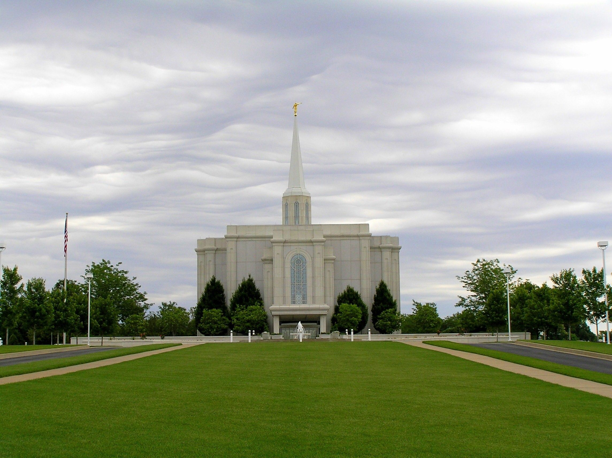
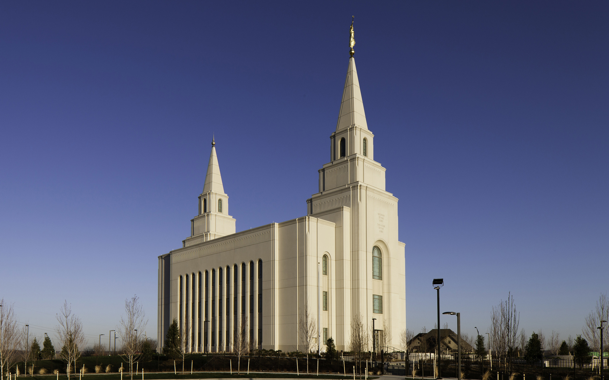
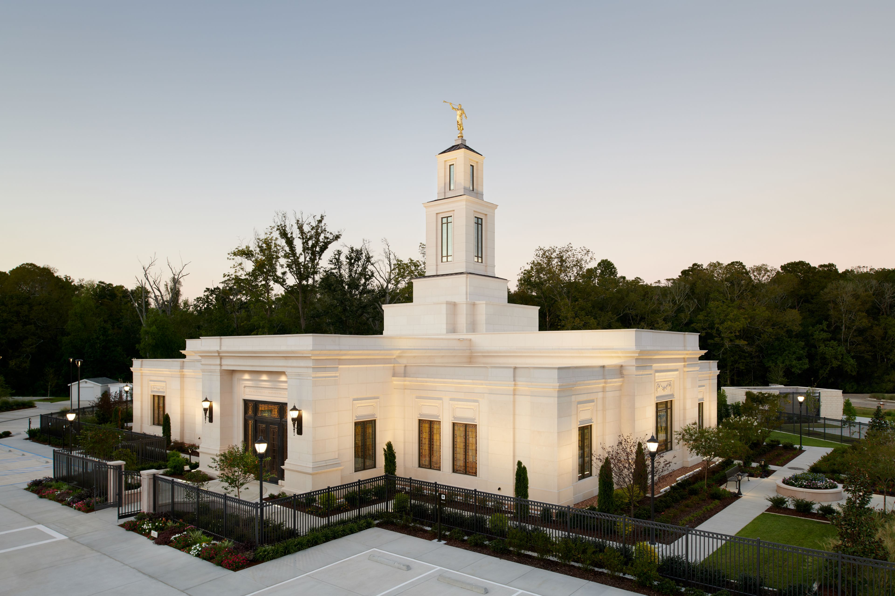

Memphis Temple

Address: 4199 Kirby-Whitten Pkway
Bartlett, TN 38135
Phone Number: (1)901-379-0202
Services:
- No clothing rental available
- No cafeteria available
- No Patron Housing available
- No distribution center nearby
Ordinance Schedule
- Baptisms: 9AM - 8:30PM
- Initiatory: 9AM - 8:15PM
- Endowments: 9AM - 7:30PM
- Sealings: 9AM - 8:30PM
Closures
- Tuesday, 24 December 2019 - Wednesday, 25 December 2019
- Tuesday, 31 December 2019 - Wednesday, 1 January 2020
- Saturday, 4 April 2020
- Monday, 6 April 2020 - Monday, 20 April 2020
- Saturday, 4 July 2020
- Saturday, 3 October 2020
- Monday, 5 October 2020 - Monday, 19 October 2020
- Wednesday, 25 November 2020 - Thursday, 26 November 2020
- Thursday, 24 December 2020 - Friday
- 25 December 2020
The Memphis Tennessee Temple is the 80th operating temple of The Church of Jesus Christ of Latter-day Saints. Ground was broken for the Memphis Tennessee Temple on January 16, 1999. The temple in Memphis serves more than 20,000 members in Tennessee, Arkansas, Mississippi, and Missouri. On April 23, 2000, James E. Faust dedicated the building for its religious use. The Memphis Tennessee Temple has a total floor area of 10,700 square feet, two ordinance rooms, and two sealing rooms. On April 10, 2017 the LDS Church announced that the temple would close in October 2017 for renovations that would be completed in 2019. As the renovations neared completion, the church originally announced there would be no open house, but an update on April 11, 2019 indicated there would be an open house from April 13 to April 20, excluding Sunday. The temple was rededicated on May 5, 2019 by Jeffrey R. Holland.
St Louis Temple

Address: 12555 N Outer Forty Dr
St. Louis, MO 63141
Phone Number: (1)314-514-1122
Services:
- Clothing rental available
- No cafeteria available
- No Patron Housing available
- Distribution center nearby
Ordinance Scheudle
- Baptisms: 9AM - 8:30PM
- Initiatory: 7AM - 8:30PM
- Endowments: 7AM - 8PM
- Sealings: 9AM - 8PM
Closures
- Tuesday, 17 December 2019
- Tuesday, 24 December 2019 - Wednesday 25 December 2019
- Tuesday, 31 December 2019
- Wednesday, 1 January 2020
- Monday, 23 March 2020 - Monday, 6 April 2020
- Saturday, 4 July 2020
- Monday, 21 September 2020 - Monday, 5 October 2020
- Wednesday, 25 November 2020 - Thursday, 26 November 2020
- Thursday, 24 December 2020 - Friday, 25 December 2020
- Thursday, 31 December 2020
The St. Louis Missouri Temple is the 50th operating temple of The Church of Jesus Christ of Latter-day Saints. It is located in Town and Country, Missouri, a St. Louis suburb. LDS Church president Gordon B. Hinckley broke ground for the temple on October 30, 1993, a public open house was held April 26 – May 17, 1997, and it was dedicated on June 1, 1997. The temple has a total of 58,749 square feet, four ordinance rooms, and four sealing rooms. It has a white granite exterior and a 150-foot spire topped with a gold-leafed statue of the angel Moroni.
Kansas City Temple

Address: 7001 Searcy Creek Pkwy
Kansas City, MO 64119
Phone Number: (1)816-413-1430
Services:
- Clothing rental available
- No cafeteria available
- No Patron Housing available
- No distribution center nearby
Ordinance Schedule
- Baptisms: 6:45AM - 9PM
- Initiatory: 6:45AM - 9PM
- Endowments: 7AM - 7:30PM
- Sealings: 6:45AM - 9PM
Closures
- Tuesday, 24 December 2019 - Wednesday, 25 December 2019
- Tuesday, 31 December 2019
- Wednesday, 1 January 2020
- Monday, 3 February 2020 - Monday, 2 March 2020
- Saturday, 4 April 202)
- Saturday, 4 July 2020
- Monday, 13 July 2020 - Monday, 27 July 2020
- Saturday, 3 October 2020
- Wednesday, 25 November 202)
- Thursday, 26 November 2020
- Thursday, 24 December 2020 - Friday, 25 December 2020
- Thursday, 31 December 2020
The Kansas City Missouri Temple is the 137th operating temple of The Church of Jesus Christ of Latter-day Saints. The temple was opened to the public for an open house between April 7–28, 2012. Among the visitors were Missouri governor Jay Nixon and Kansas governor Sam Brownback, who were given a private tour on April 5, 2012. Over 92,000 people toured the temple. People from 47 states and 11 countries attended the open house. On May 5, 2012, church members between the ages of 12 and 18 who resided in the new temple district staged a cultural performance at the Kansas City Municipal Auditorium in celebration of the completion of the temple. The following day, May 6, 2012, the temple was dedicated by Thomas S. Monson.
Baton Rouge Temple

Address: 10339 Highland Rd
Baton Rouge, LA 70810
Phone Number: (1)225-769-1197
Services:
- No clothing rental available
- No cafeteria available
- No Patron Housing available
- No distribution center nearby
Ordinance Schedule
- Baptisms: 9AM - 10PM
- Initiatory: 9AM - 8PM
- Endowments: 9AM - 7PM
- Sealings: 9AM - 8PM
Closures
- Tuesday, 24 December 2019 - Wednesday, 25 December 2019
- Tuesday, 31 December 2019 - Wednesday, 1 January 2020
- Saturday, 4 April 2020
- Monday, 4 May 2020 - Monday, 18 May 2020
- Saturday, 4 July 2020
- Saturday, 3 October 2020
- Monday, 2 November 2020 - Monday, 16 November 2020
- Wednesday, 25 November 2020 - Thursday, 26 November 2020
- Thursday, 24 December 2020 - Saturday, 26 December 2020
- Thursday, 31 December 2020 - Friday, 1 January 2021
- Thursday, 31 December 2020 - Friday, 1 January 2021
The LDS Church First Presidency announced on October 14, 1998 that a temple would be built in Baton Rouge and a groundbreaking ceremony was held on May 8, 1999. The temple was open to the public for tours from July 1 through 8th, 2000. LDS Church president Gordon B. Hinckley dedicated the temple on July 16, 2000. Four dedicatory services were held to accommodate the members who wanted to attend. Just before the first dedication service a cornerstone ceremony was held. The Baton Rouge Louisiana Temple serves 24,000 LDS Church members in the New Orleans, Alexandria, Baton Rouge, Denham Springs, and Monroe Louisiana stakes, as well as members in Gulfport, Hattiesburg, and Jackson, Mississippi stakes. The temple is 10,700 square feet, with a baptistry, two ordinance rooms, two sealing rooms, and a Celestial room. The exterior is made from Imperial Danby White marble quarried in Vermont, and the grounds are beautifully landscaped. The site is 6.3 acres, which includes a meetinghouse.